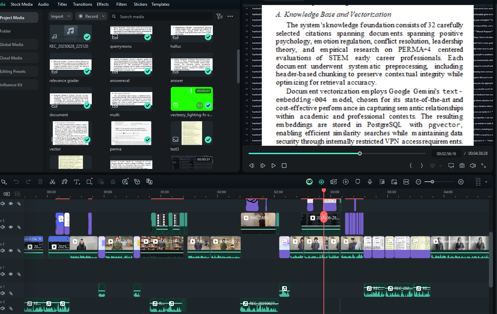
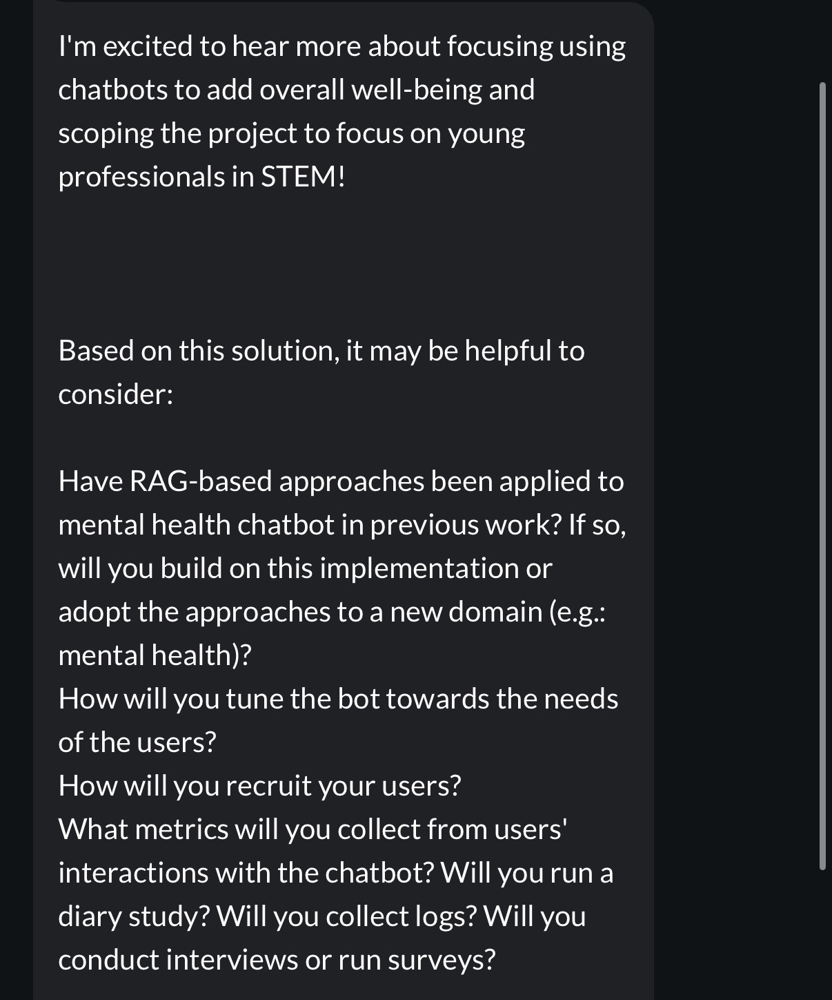
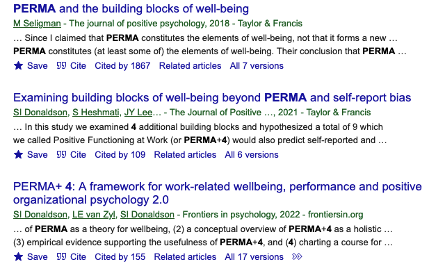
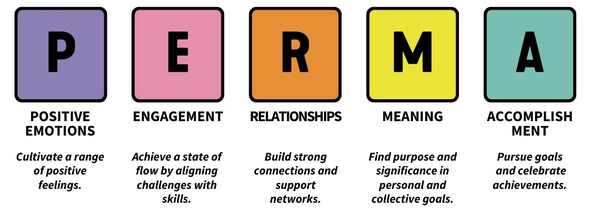
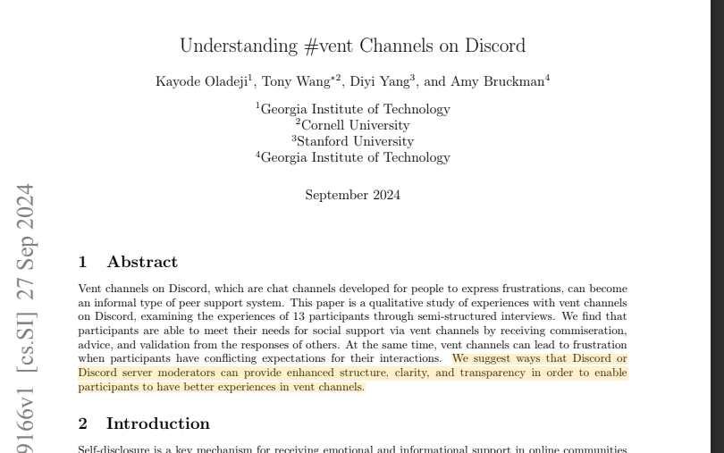
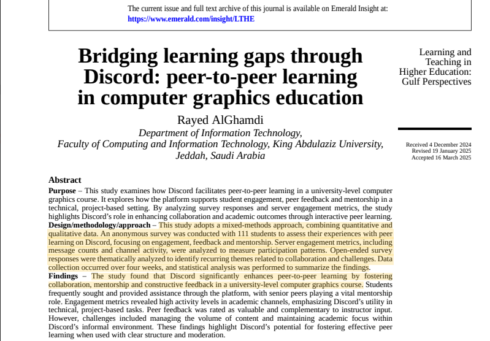

Hi everyone, my name is Anthony Dong, I am an undergraduate at San Francisco State University majoring Computer Science.
Some cool hobbies I would like to share is my love for Star Wars, gaming, talking with friends and working out!
I had some fun this week, with the help of Joan I managed to set up basically what is the entirity of TrueNorth on Williams server with a lot of trial and error. It was a lot of back and fourth but I'm glad Joan answered all my questions since I did have a lot. The main ideas were installing Poetry, a depedency manager for Python, cloning the github repo of TrueNorth, editing the env file to import our own API key and manually inserting all the pdfs of books that will be used through zip file. This process took around a couple of hours but I learned a lot of ideas/terms which I prioritize over all else. I was also able to get my Gemini key to work through the free trial given to students so now the Discord bot can be expanded for the future!
We can now apply for REU funding this week so that is the first thing I did, this is also the last week of the UR2PHD course and I'm very grateful I had the opportunity to be a part of this class and these skills will forever stay with me in the future. Highlights to me were listening to the workshops, talking to other students and what their research topics were, and being able to get as much work done in a short amount of time. This was also the week for getting the final submissions of TrueNorths Conference Submission for AIxHeart. I'm still learning the techniques/terminiology used in the papers to convey as many points across as efficiently as possible but it looked all very well written to me. Below I show my favorite part of it all, making an edit that means something to others. 
Not too much happened this week so I will focus time on my own thoughts as well. We spent time looking/refining our proposal, it's important for me to be as accurate as possible / use correct terminology because I value not spreading misinformation. I am also representing someone elses project and expanding it at the same time so I have been working closely with Joan and going back and fourth to make sure that we are always on the same page. In our UR2PHD class, the final project calls for a presentation/video detailing our proposal. I love editing because in a way it is very therapeutic to me so I am taking the initative to start and get B-roll early with Windtell. Adding on to the class, although it is incredibly condensed/short, I have learned a lot so far about research and the community that entails in it. We are usually given a few papers to read or to choose papers related to the research we would like to pursue and it's just always interesting to see what different perspectives there are/methods they use to highlight their findings. 
William has set up his server this week, we will access it through the terminal and ssh. Our goal in the future is to experiment/install the base TrueNorth implementation on the server and later on implement the Discord portions. I'm really excited to see what occurs in the future with Williams server! We also had a meeting with everyone, mainly just housekeeping and to check where everyone is at! I find the check ins to be very helpful as well as always having a roadmap in mind. In our UR2PHD training class, we are now starting our proposal, in our case we are expanding TrueNorths implementations of assisting those underrepresented in STEM. The goal of the proposal is to be able to use Discord as a way to gain a larger audience/exposure to TrueNorth! We also went further in depth about PERMA +4 implementations and reading citations related to its strengths.  
This week focused on the importance of setting up everything for future weeks, especially for the UR2PHD course. In our course we learned what latex is, a document markup language that is used in professional settings, specifically research papers. The latex editor we used was overleaf and I found it to be very simple to use, especially when we are also given multiple examples to view to help formatting! Below I highlight 2 research papers I have read so far in the UR2PHD class, it gives me a much better insight on what kind of community is present on Discord and how we should be taking steps forward to account for that.  
This week was very important to establish expecations/get into the mindset of everything. I am getting into the groove of doing everything so far related to the UR2PHD class so that I can also delegate time to both the discord research bot and my summer classes. This week I was able to import google gemini to our bot so theres an opportunity to be able to use its features. A current roadblock is the free trial stopping us due to the fact that it is easy to hit the trial limit. I am most excited about learning how to be more of a professional in the workforce as well as being able to read and analyze research papers more efficiently!
For the summer of 2025, I am currently an undergraduate researcher for Computing Research Associate (CRA) and UR2PHD. With the help of my other undergraduate researcher, Windtell Souphavong and my 2 graduate mentors, Joan Zheng and William Wyatt, we are developing a Discord chatbot to assist and promote retention in students in their early academic career, specifically those in STEM. Computer Science has one of the highest dropout rates and an issue like this stems from many different factors, those that we plan to address in our project. Our chatbot is informed by design principles as described in (Stattkus, 2024) and uses a RAG-based framework for knowledge retrieval and answer generation (Lewis, 2021).So far, I have been tasked by my graduate mentors to explore and learn creating a discord bot API through Python. I have learned a lot of basics as well as understand Python much better which I'm very excited to keep continuing with. As of now, the bot can respond to both a help command and give a vast variety of jokes sourced from the now shut down game "ToonTown". I would like to give a shoutout to both my graduate mentors who have helped me a lot, especially Joan Zheng who has constantly pushed me to be the best version of myself!